VoIP communications have two parts: signaling (call setup/teardown via SIP or Skinny/SCCP) and transport (the actual voice via RTP). Wireshark includes an RTP player to replay VoIP conversations.
- Why is it important to capture VoIP traffic as close to the VoIP phone as possible rather than at a core switch?
- SIP can run over UDP or TCP port 5060 — if Wireshark does not identify the RTP stream, what configuration change can you make?
Understand VoIP Traffic Flows
VoIP communications consist of two primary parts — the signaling protocol for call setup and teardown and the transport protocol for the voice communications. Session Initiation Protocol (SIP) is an example of a VoIP signaling protocol. SIP can run over UDP or TCP port 5060 (it is more common to see SIP running over UDP). Skinny Call Control Protocol (SCCP or "Skinny") is a Cisco proprietary protocol used between Cisco VoIP phones and the Cisco Call Manager.
Realtime Transport Protocol (RTP) carries the voice call itself. Wireshark includes an RTP player that enables you to play back VoIP conversations. Realtime Transport Control Protocol (RTCP) provides out-of-band statistics and control information for an RTP flow. RTP can run over any even port number whereas RTCP runs over the next higher odd port number. For example, if RTP runs over port 8000, RTCP runs over port 8001.
You may also see Dual-Tone MultiFrequency (DTMF) telephony events during your VoIP analysis sessions. DTMF is the tones sent when you push a button on a phone. Sometimes these signals are sent in the voice channel (in-band signaling). More often you will see separate control packets for DTMF (out-of-band signaling). Wireshark recognizes and dissects out-of-band DTMF traffic.
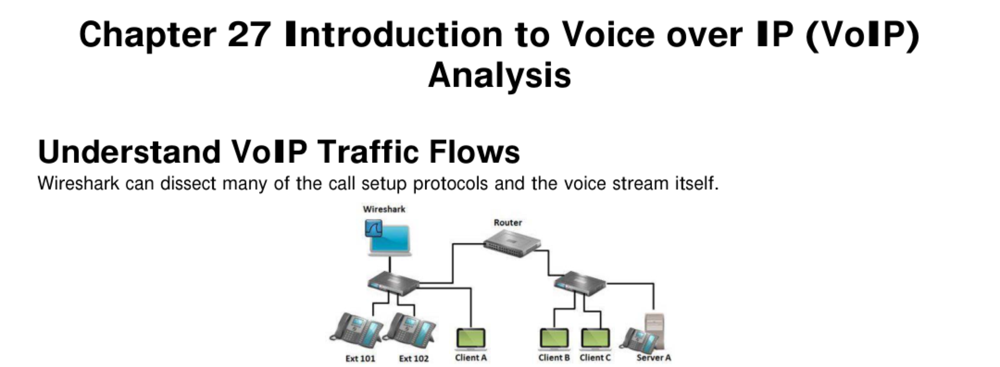
VoIP Call Setup Process
When a VoIP call is initiated, the signaling protocol is used to set up the call. For example: the calling phone sends an Invite. The telephony server sends an Invite to the target phone while sending a 100 Trying message to the caller. The receiving phone indicates that it is ringing (180 Ringing) — this information is also forwarded to the call initiator. When the user picks up the phone, it sends 200 OK indicating the call has been accepted.
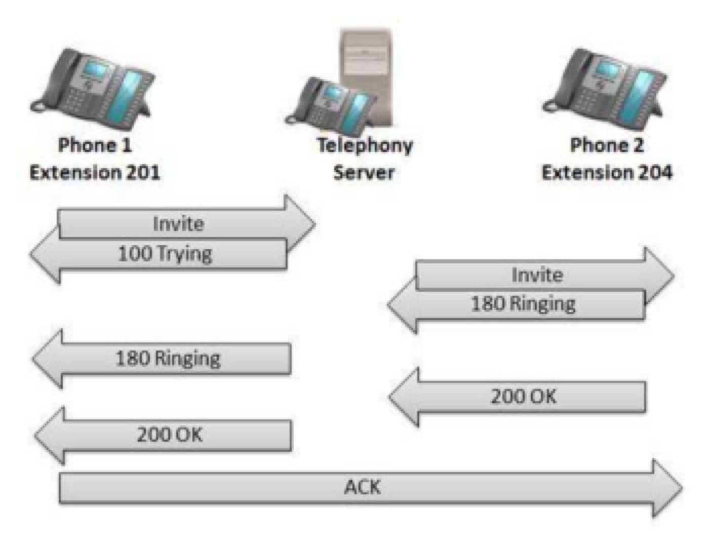
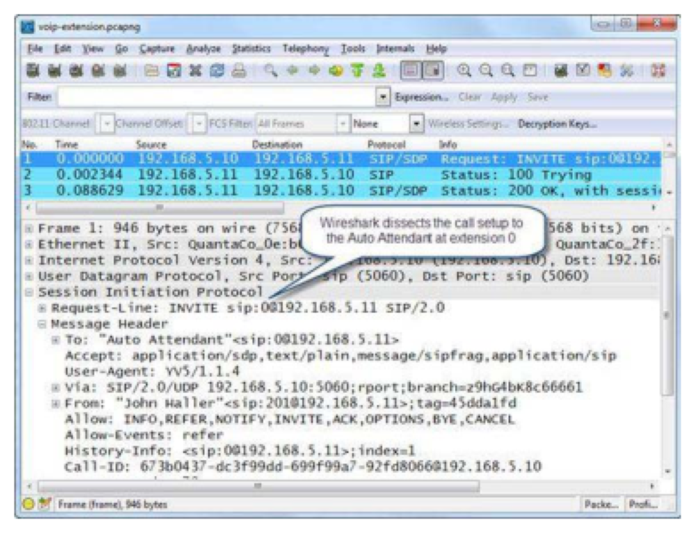
Session Bandwidth and RTP Port Definition
The 200 OK response contains Session Description Protocol (SDP) information including: (o) owner/creator of the session, (s) session name, (c) connection information (IP address), (b) bandwidth estimate, (m) media name (the RTP port that will be used for the call), and (a) session attributes (the codec offered). The codec that will be used for the voice call is defined in the SDP portion of the SIP communications.
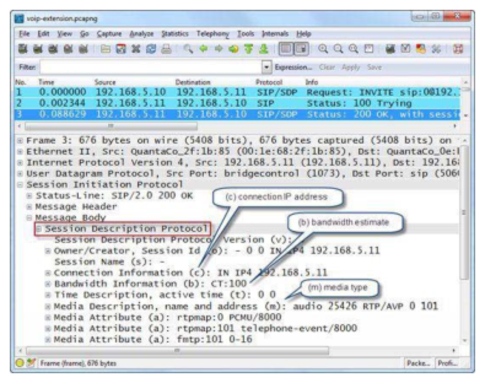
| Codec | Packets Per Second | Bandwidth Per Call (kbps) |
|---|---|---|
| G.711 | 50 | 87.2 |
| G.729 | 50 | 31.2 |
| G.723.1 | 34 | 21.9 |
| G.726 | 50 | 47.2 |
| G.728 | 34 | 31.5 |
VoIP quality is degraded by two main factors: packet loss and jitter. Because RTP uses UDP, lost packets are not retransmitted — they result in garbled audio. Jitter is a variance in packet arrival rate.
- Why would retransmitting lost RTP packets actually make a VoIP call worse rather than better?
- What causes jitter and at what threshold does it start affecting call quality?
Analyze VoIP Problems
Packet Loss
Realtime Transport Protocol typically carries call data over UDP, a connectionless protocol. UDP does not track packets to ensure they arrive at the destination. If a packet is lost, it is not resent by UDP. In the case of VoIP, retransmissions would not be a good thing because the retransmissions may create a conversation where words are out of order or further garbled.
Select Telephony | RTP | Show All Streams to identify packet loss in one call direction. When you select Analyze, Wireshark lists the packets in the RTP stream and provides additional details on the VoIP call. The Status column indicates problems in the RTP streams — packet loss is denoted by "Wrong sequence" indications in the Status column. Packet loss can occur because of timing issues such as excessive jitter or clock skew between VoIP end points.
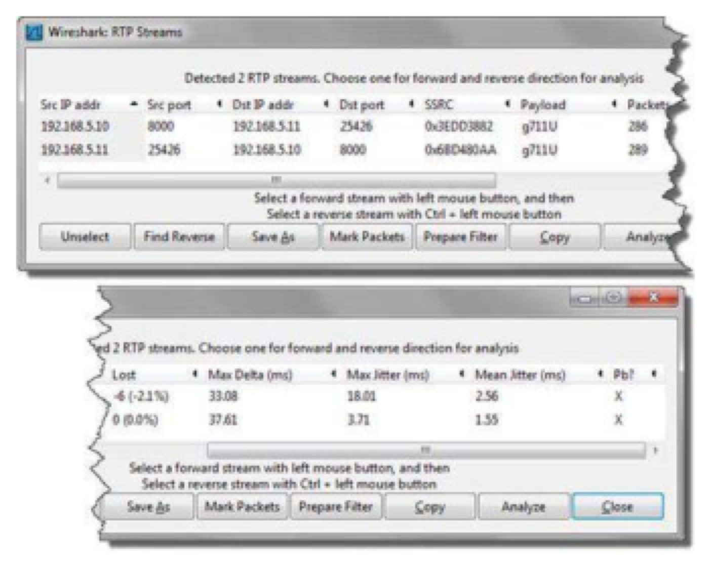
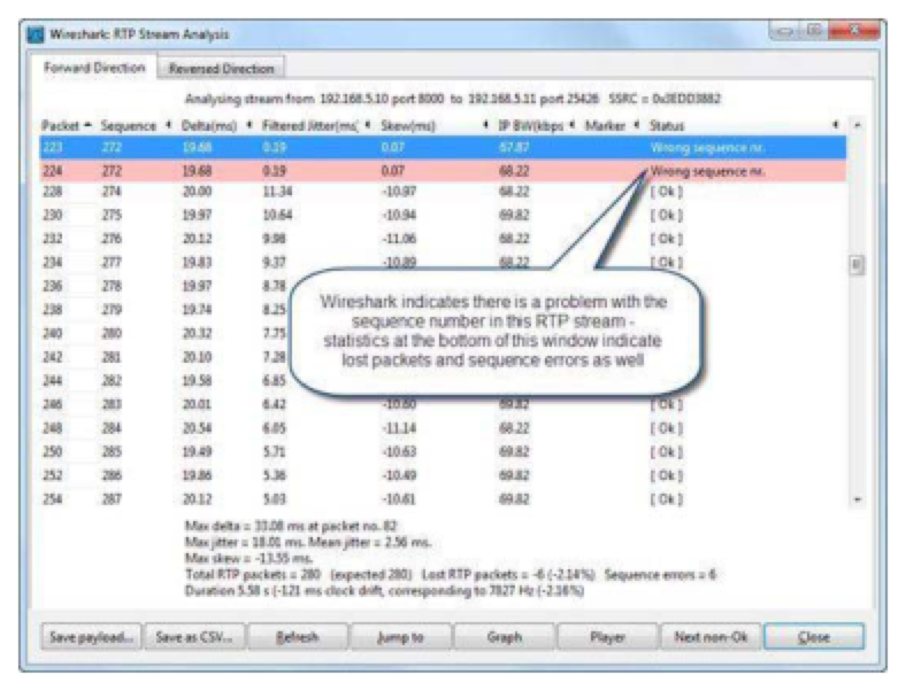
Jitter
Jitter is a variance in the packet rate. Wireshark calculates jitter according to RFC 3550 (RTP). Excessive jitter can be caused by congested networks, load balancing, quality of service configurations, or low bandwidth links. Jitter buffers act like "elastic bands" that help buffer packets to even out the variance in arrival times. A high jitter rate (above 20ms) will affect the call to the point that users will become annoyed. If the jitter level is excessively high, packets can be dropped by the jitter buffer in the receiving VoIP host.
The delta Time column in Figure 329 shows the time since the last RTP packet was received, and should remain fairly consistent. In a typical call, most deltas are around 20ms — corresponding to the packetization time (ptime) of the codec being used. The ptime refers to the length of the recorded voice in each packet.
SIP (RFC 3261) is the most common VoIP signaling protocol. Its response codes follow the HTTP pattern: 1xx = provisional, 2xx = success, 4xx-6xx = errors. Response codes above 399 indicate failures.
- What does a SIP response code of 488 "Not Acceptable Here" most likely indicate about the call setup attempt?
- What is the difference between a SIP INVITE and a SIP CANCEL?
Examine SIP Traffic
SIP is defined in RFC 3261 and, although typically associated with VoIP call setup, SIP can be used to set up other application sessions as well. The SDP information in a SIP packet includes: (o) owner/creator, (s) session name, (c) connection information (IP address), (b) bandwidth estimate, (m) media name (the RTP port), and (a) session attributes (codecs offered).
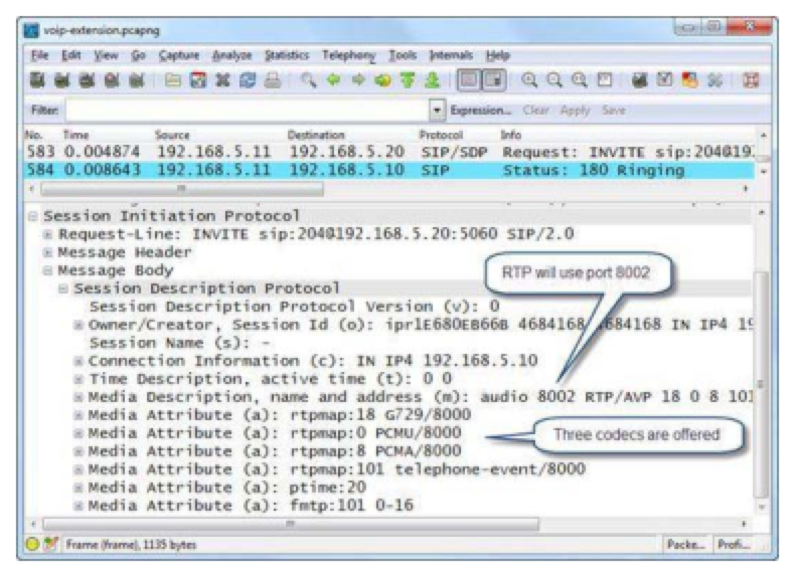
SIP Commands
| Command | Purpose |
|---|---|
| INVITE | Invites a user to a call |
| ACK | Acknowledgement used to facilitate reliable message exchange for INVITEs |
| BYE | Terminates a connection between users |
| CANCEL | Terminates a request or search for a user — used if a client changes its decision to call |
| OPTIONS | Solicits information about a server capabilities |
| SUBSCRIBE | Requests state change information regarding another host |
| REGISTER | Registers a user current location |
| INFO | Used for mid-session signaling |
SIP Response Codes
| Code Range | Category | Common Examples |
|---|---|---|
| 1xx | Provisional | 100 Trying, 180 Ringing, 183 Session Progress |
| 2xx | Success | 200 OK, 202 Accepted |
| 3xx | Redirection | 301 Moved Permanently, 302 Moved Temporarily |
| 4xx | Client Error | 401 Unauthorized, 404 Not Found, 480 Temporarily Unavailable, 488 Not Acceptable Here |
| 5xx | Server Error | 500 Server Internal Error, 503 Service Unavailable |
| 6xx | Global Failure | 600 Busy Everywhere, 603 Decline |
Select Telephony | SIP to view SIP statistics showing response code counts. SIP 488 Not Acceptable Here may be an indication that a common codec cannot be defined between the two endpoints.
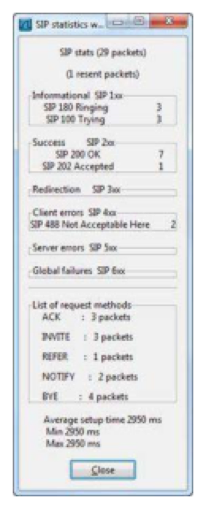
RTP carries real-time data (voice, video) over UDP. RTCP provides out-of-band control and monitoring for RTP flows. Wireshark includes an RTP player to replay VoIP conversations.
- Why does RTP use even port numbers while RTCP uses the next odd port number? What does this pairing allow?
- What are the three marker types shown in Wireshark RTP player, and what does each represent?
Examine RTP Traffic
RTP provides end-to-end transport functions for real-time data such as audio, video or simulation data over multicast or unicast network services. RTP is defined in RFC 3550. RTP is supplemented by RTCP which allows monitoring of the RTP data delivery and provides minimal control and identification functionality.
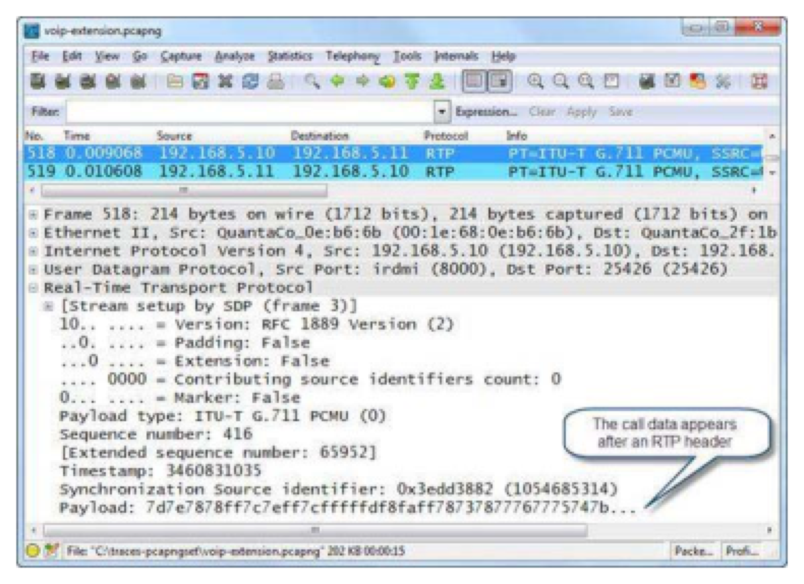
There are five RTCP packet types:
| Type | Code | Purpose |
|---|---|---|
| SR | 200 | Sender Report |
| RR | 201 | Receiver Report |
| SDES | 202 | Source Description |
| BYE | 203 | Goodbye |
| APP | 204 | Application-Defined |
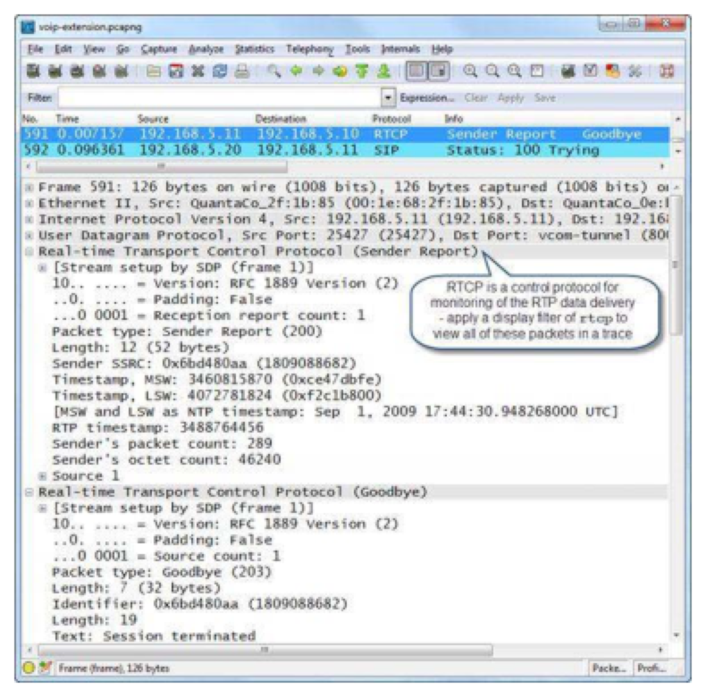
Play Back VoIP Conversations
To play back a VoIP RTP stream, select Telephony | VoIP Calls. Select a call (or multiple calls using Ctrl) and click Player. You can emulate a specific jitter buffer setting before replaying VoIP calls — lowering the jitter buffer value will cause more packets to be dropped. Click the Decode button to launch the RTP player.
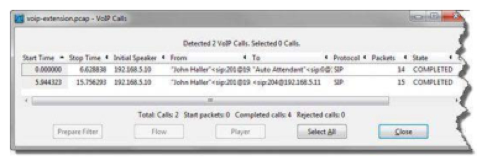
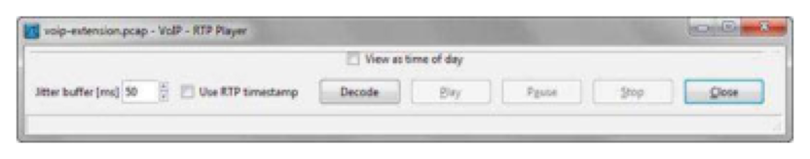
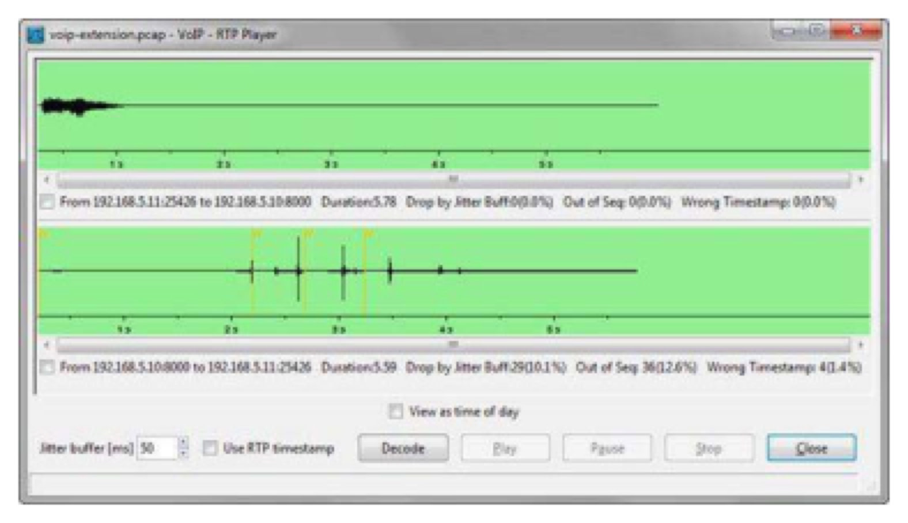
Wireshark RTP player marker definitions: Red line = packet drops by the jitter buffer (S_DROP_BY_JITT), Amber line = wrong timestamp on a packet (S_WRONG_TIMESTAMP), White line = silence in the playback (S_SILENCE). Black is the default color for the playback line itself.
VoIP display filters can target SIP commands, response codes, RTP payload types, and DTMF events. Coloring rules for SIP resends and error responses speed up troubleshooting.
- Why might you need to create a capture filter for all UDP traffic rather than just SIP port 5060 when capturing VoIP?
- How would you use a display filter to find all SIP errors (client, server, and global failures) in a trace file?
Filter on VoIP Traffic
To capture only VoIP traffic you can build capture filters based on the ports used for SIP (udp.port=5060 for example). The port number used for RTP may not be known, however. It may be best to simply create a capture filter for all UDP traffic (udp) since SIP and RTP both can travel over UDP.
| Display Filter | Meaning |
|---|---|
| sip | SIP traffic only |
| rtp | RTP traffic only |
| rtcp | Realtime Transport Control Protocol |
| sip.Method=="INVITE" | SIP Invites |
| sip.Method=="BYE" | SIP Connection closings |
| sip.Method=="NOTIFY" | SIP Notify packets |
| sip.Status-Code > 399 | SIP response codes indicating client, server or global faults |
| sip.resend==1 | Detect when a SIP packet had to be resent |
| rtp.p_type==0 | G.711 codec definition for payload type |
| rtpevent.event_id==4 | DTMF — a 4 was pushed on the phone keypad |
| rtcp.pt==200 | RTCP sender report |
Create a VoIP Profile
For efficient VoIP analysis and troubleshooting, consider creating a VoIP profile with the following elements: set the Time column to "Seconds Since Previous Displayed Packet", add a column for IP DSCP (Differentiated Services Code Point) to identify traffic quality of service settings, colorize all SIP resends, colorize all SIP response codes greater than 399.
Case Study
Sean Walberg wrote an application for an Interactive Voice Response (IVR) system that would take a message from a caller and then try to reach a technician by dialing out. If someone answered, the message would play and the technician would acknowledge by pressing 1. During production, technicians who pressed 1 were being skipped — the call continued to the next person in the list.
IP phones worked fine, but cell phones and landlines failed. Sean captured traces at the operations desk IP phone (bridging to an attached PC) and at the voice gateway Ethernet port (via SPAN session). He used Telephony | VoIP Calls to find the relevant call, then replayed it. He could hear the DTMF digit being pressed — but in the IP phone trace, he heard only a click. Back in the call graph, he saw an H.245 User Input packet sent out-of-band instead of in-band tones in the RTP stream.
Root cause: the IVR system required out-of-band DTMF signaling, but when the IVR initiated a call out to the PSTN, DTMF relaying was not enabled on the voice gateway. After adjusting the gateway configuration, DTMF tones were correctly relayed out-of-band and the IVR system worked for all phone types.

VoIP traffic consists of two specific elements — the call setup traffic (signaling traffic) and the call traffic itself. SIP is an example of a protocol used for call setup whereas RTP is an example of a protocol used for the actual VoIP call. SIP can run over UDP or TCP on port 5060. A typical SIP call setup includes Invite, 100 Trying, 180 Ringing, 200 OK and ACK sequence. SIP response codes greater than 399 indicate client errors, server errors or global failures.
RTP carries the voice call itself. Wireshark contains an RTP player that enables you to listen to unencrypted VoIP conversations. If Wireshark does not recognize the call traffic, enable "Try to decode RTP outside of conversations" or manually use Decode As. RTP is supplemented by RTCP which offers monitoring of the RTP data delivery system.
Call bandwidth requirements vary depending on the codec used for the call. Packet loss, jitter and asynchronous QoS settings can negatively affect VoIP communications. Jitter is a variance in the packet rate. Asynchronous QoS settings can be detected by adding a column for the DSCP field in the IP header.